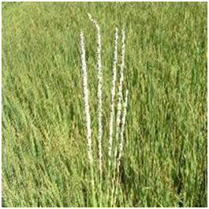

RICE :: FUNGAL DISEASES :: UDBATTA DISEASE
Udbatta disease - Ephelis oryzae(Sexual stage: Balansia oryzae-sativa)
Symptoms
Symptoms appear at the time of panicle emergence. The entire ear head is converted into a straight compact cylindrical black spike like structure since the infected panicle is matted together by the fungal mycelium. The spikelets are cemented to the central rachis and the size is remarkably reduced. The entire spike is covered by greyish stroma with convex pycnidia immersed inside
|  |
Pathogen
Pycnidiospores are hyaline, needle shaped and 4-5 celled.
Management
- The pathogen is internally seed borne.
- Hot water seed treatment at 45˚C for 10 min. effectively controls the disease.
- Removal of collateral hosts Isachne elegans, Eragrostis tenuifoliaand Cynadon dactylon.